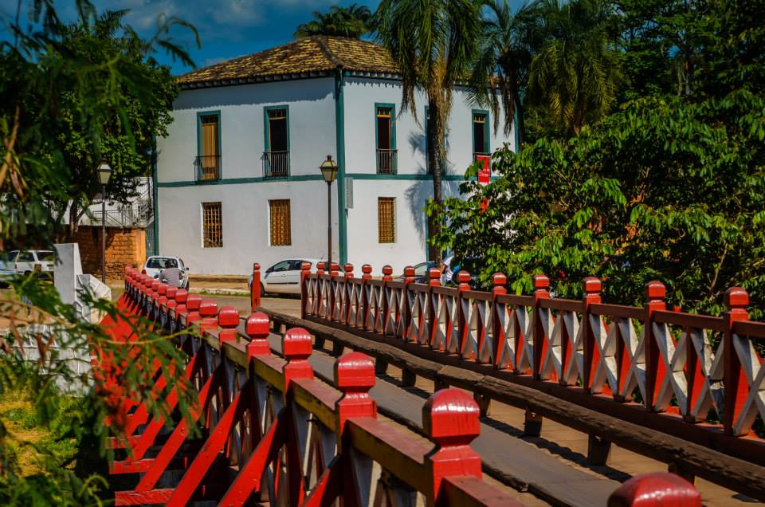
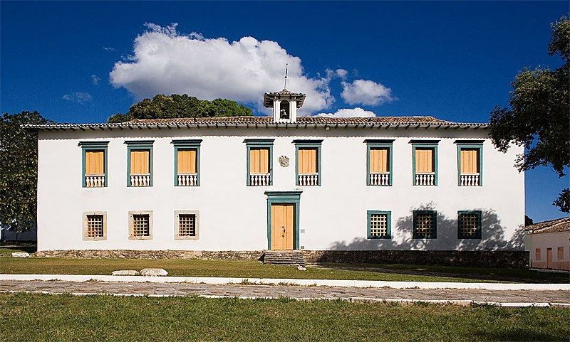
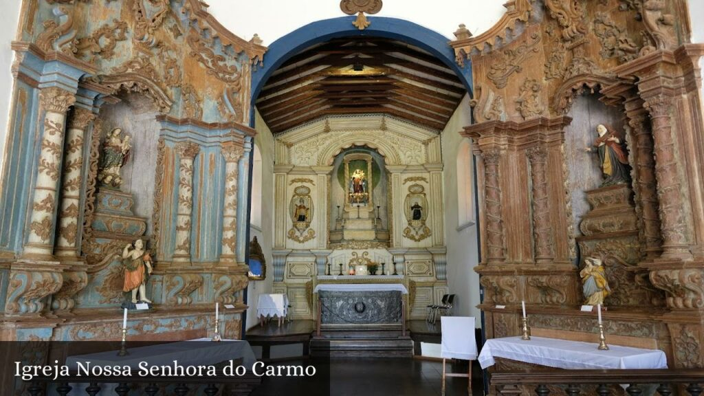
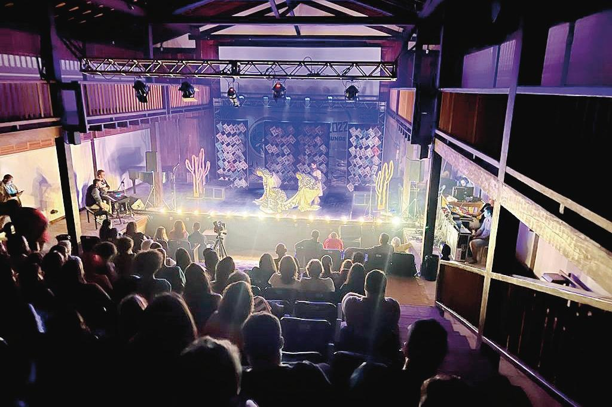

- Centro Histórico
- Casa de Câmara e Cadeia (Museu do Divino)
- Igreja Nossa Senhora do Carmo e Museu da Arte Sacra
- Theatro Sebastião Pompeo de Pina

O Centro Histórico de Pirenópolis é o principal local da cidade, onde ficam concentradas as praças, as ruass de pedra, os casarões tradicionais, feiras artesanais e também os habitantes, que se reúnem nos fins de tarde para conversar e realizar atividades, algo bem típico de cidades do interior.
No centro é onde ficarão a maior parte das atividades turísticas de dentro da cidade, sendo assim o lugar mais interessante para ficar hospedado.

A Casa de Câmera e Cadeia é um monumento construído em 1733, mas foi reinaugurada em 1919 como réplica próxima à ponte do Rio das Almas, sendo utilizado tanto como Câmara Municipal até o ano de 1999 e como cadeia até o ano de 2006.
O prédio é marcado pela clara influência colonial, seguindo o padrão clássico dos casarões antigos e adotando barras de ferro nas celas dos presos.
Hoje ela é conhecida como Museu do Divino, desde que foi transformada em patrimônio histórico e cultural pela IPHAN (Instituto do Patrimônio Histórico e Artístico Nacional), e é dedicada a preservar diversas fotografias, objetos e principalmente a Festa do Divino Espírito Santo.

A Igreja Nossa Senhora do Carmo ou Igreja Nossa Senhora do Monte Carmelo como também é chamada, é uma das principais igrejas da cidade, sendo reconhecida pela sua arquitetura deslumbrante no mesmo estilo de uma igreja matriz, construída em 1750 e sendo até hoje um símbolo da cultura religiosa do Brasil.
Também é conhecida pelo Museu da Arte Sacra, já que possui diversas obras, esculturas, pinturas e objetos históricos que remetem a religião católica, adotando assim o nome de sacra.
Como de costume das igrejas da região, nela também são realizadas missas e seus horários ficam disponíveis nas páginas de Instagram e Facebook da Paróquia.

O Teatro Sebastião Pompeo de Pina é uma das estruturas de artes cênicas mais antigas do Brasil, que foi construído e idealiizado pelo próprio Sebastião de Pina e com a ajuda da comunidade local entre o final do século XIX e começo do século XX.
O monumento é marcado pela arquitetura colonial presente em toda a cidade de Pirenópolis, mas também possui muitos traços neoclássicos, sendo considerado como um estilo híbrido.
Além disso, o prédio se destaca por ser tombado pela IPHAN em 1988, como outros locais da cidade,
Atualmente, o teatro ainda realiza diversos eventos e é um dos pontos turísticos mais visitados, movimentando muito a economia local e preservando a cultura da região.